The AKM, also known as the "AK" in common parlance, is a select-fire carbine chambered to the 7.62x39mm cartridge. It quickly came to prominence in the Soviet Army after being introduced in 1959, and consequently became common throughout the former soviet bloc, as well as throughout Africa and Asia.
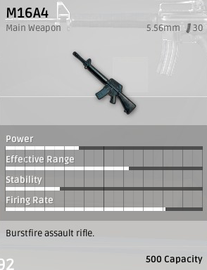
The M16A4 is the fourth generation of the M16 series. The series entered the US military in 1964 during the Vietnam War, and replaced the M14 as the standard service rifle. The rifle itself has many chambered variants, with the original chambering being 5.56 x 45mm with a 30 round magazine.
The M16 version in PUBG is not actually a M16A4, but rather an M16A2. The main difference being that the A4 has a full length quad Picatinny rail for mounting optics and other ancillary devices, re-introduces full-auto firing mode in the trigger group, and Knight's Armament M5 RAS hand guard.
The misnamed M16A4 in the game offers two fire modes, 'Single' and 'Burst'.
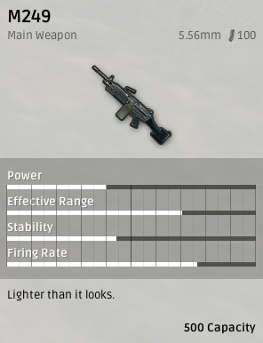
The M249 light machine gun (LMG), formerly designated the M249 Squad Automatic Weapon (SAW), and formally written as Light Machine Gun, 5.56 mm, or the .223 military rnd.
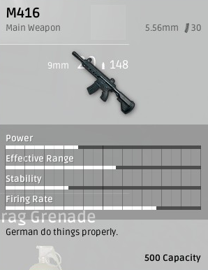
The M416, properly known as the Heckler & Koch HK416, is a tactical rifle based on the AR-15 platform as an improvement of the M4 Carbine. It integrates the short-stroke gas piston system from the G36 rifle for less recoil and easier service. This assault rifle is military classified as the G38.
The M416 can be found all over the map, but is easier found in Georgopol, Sosnovka Military Base, Primorsk, Mylta Power, Yasnaya Polyana, Rozhok and Novorepnoye. This is because these places have a higher value when it comes to military loot, thereby increasing the chances of finding the M416.
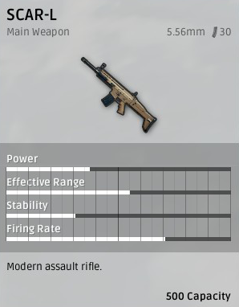
The SCAR-L is the light variant of the FN SCAR (Special Operations Forced Combat Assault Rifle), a gas-operated short-stroke gas piston automated rifle chambered to a variety of casings. It was originally developed by FN Herstal for the United States Special operations Command (SOCOM) as an entry to the SCAR Competition, a competition to find the new service rifle for SOCOM. As of 2015, the rifle was in service in over 20 countries.
SUBMACHINE GUNS
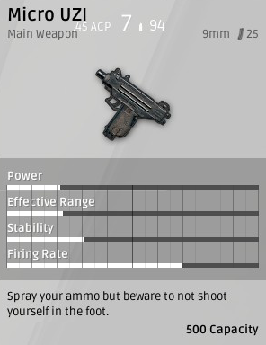
The UZI is an Israeli open-bolt blowback powered submachine gun designed by Major Uziel Gal in the early 1950's. It's commonly exported to over 90 countries, and are still in active use. The Micro Uzi had it's stock removed, the magazine shortened, and the barrel reduced to almost pistol length. This resulted in a more compact, lightweight weapon, with a reduction in accuracy and range.
The Micro Uzi is an even further scaled down version of the Uzi, introduced in 1986. The Micro Uzi is 486 mm (19.13 in) long, reduced to 282 mm (11.10 in) with the stock folded and its barrel length is 117 mm.[1] Its muzzle velocity is 350 m/s (1148 f/s) and its cyclic rate of fire is 1,200 rpm. It weighs slightly over 1.5 kg (3.3 lb).[2]
This weapon excels on taking out enemies at early moments where most enemies still doesn't have armor. It's high rate of fire, while keeping it's DPS high, also makes it rather uncontrollable at longer distances.
Since the weapon only excels at taking out enemies without armor, using this weapon at end-games are usually not recommended, because of most players using armors and better equipments than on the early games.
In summary, the Micro UZI is a short range, high DPS submachine gun that should be used to ambush and kill an enemy during the early game, so that you can potentially take their superior weapon.
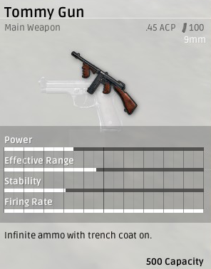
The Thompson submachine gun is an American submachine gun, invented by John T. Thompson in 1918, that became infamous during the prohibition era. It was a common sight in the media of the time, being used by both law enforcement officers and criminals.
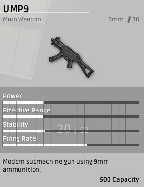
The UMP, short for Universale Maschinenpistole, is a submachine gun designed by Heckler & Koch. It has been widely adopted by police and governmental agencies, with wide adoption specifically amongst the U.S. Customs and Border Protection agency. The UMP is the successor to the MP5, though for various reasons, the MP5 and UMP are both in service to this day.
PISTOLS
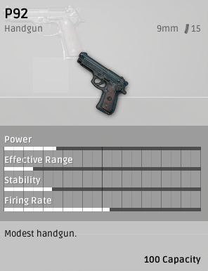
The P92 is based on the Beretta 92 series of semi-automatic handguns. It was originally designed in 1972, but is still in production today. The United States, while still using the M1911 in certain applications, adopted the model 92 in 1985 to replaced the standard Model 1911A1 .45 ACP variant - the replacement model 92 is known by its military spec name "M9".
While the real-world counterpart is produced in 9x19mm Parabellum, .40 S&W, 9x21mm IMI, and 7.65mm Luger, in BATTLEGROUNDS, it is chambered for 9mm.
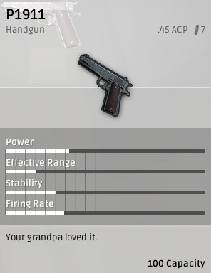
The P1911 is based on the M1911 Pistol design from designer John Browning. The weapon has been used in the US military since 1911, starting its service in World War I and continuing through to the modern day conflicts of the Iraq War and the Syrian Civil War. It is officially used by 28 nations, with the US alone having purchased around 2.7 million 1911's and variants thereof during its service life.
The gun is chambered for .45 ACP, a slim round with incredible stopping power. What it loses in range it more than makes up for in ability to inflict damage, as the .45 ACP is powerful enough to do huge damage to bodies as well as light armor and even some types of metal in engine blocks.
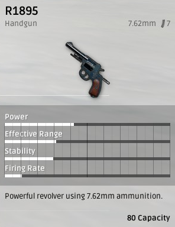
The R1895 is based on the Nagant M1895, a seven-shot, gas seal revolver originally issued to members and combatants in the Russian Empire. It was originally chambered for the proprietary 7.62x38mmR round, but because of its dimensions, it can also fire .32S&W, .32S&W Long, and .32H&R Magnum cartridges.
Because of it's unique gas-seal operation used to solve reduced muzzle velocities on conventional revolvers because of gas escaping the barrel, it is the only revolver in the world that can be reliably suppressed with the usage of the proprietary ammunition. This mechanism are brought to the game with it is the only revolver that can be attached with the suppressor.
SHOTGUNS
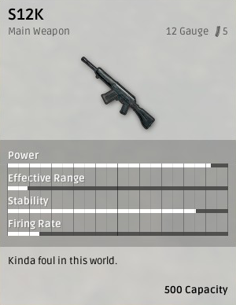
The S12K in BattleGrounds is modeled after the Saiga-12K which is a semi-automatic 12 gauge shotgun that is magazine fed. While there are some versions in it's real life counterparts that uses 20-gauge and .410 instead of 12 gauge, the ingame model uses the 12-gauge version.
What lacks in range, the S12K makes it in the sheer amount of volume. S12K's characteristics as a shotgun is a very devastating weapon at close-quarters range while it's semi-automatic mechanism makes killing multiple enemies is more viable than it's pump-action or double-barrel shotguns. The weapon are also magazine fed, which keeps the downtime low because of reloading.
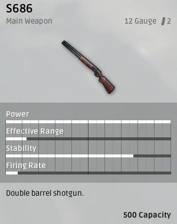
The S686 is a sporting variant of the Beretta 686 "Silver Pigeon", a sporting shotgun chambered to various gauges (though it primarily handles 12 gauge). The shotgun is a relatively common hunting gun, issued primarily to American clay pigeon shooters. The shotgun is very powerful at close range, because it is designed to group the shotgun shot close together for clay targets. What this ultimately means is very close groupings resulting in a "slug" effect, which can take down most anything it runs into as long as the range is close to medium.
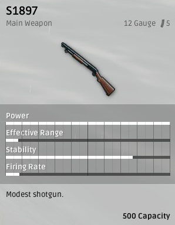
The S1897 is modeled after the Winchester Model 1897, designed by John Moses Browning. It was standard issue to the US Army, Navy, and Marines through the Philippine-American War all the way through the Gulf War. 1,024,700 have been produced during their service era. The gun is typically chambered for 12 and 16 gauge, though in the game, it's chambered solely for 12. The gun is largely used as part of police and special forces equipment due to its ability to quickly clear tight areas and its effectiveness in close combat.
SNIPER RIFLES
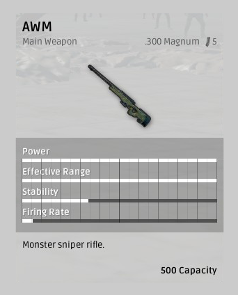
The AWM, or Accuracy International Arctic Warfare Magnum, also known as the L115 by the British Armed Forces, is a bolt-action sniper rifle. It was built on the older L96 frame, and was designed specifically for extensibility and ease of service. The AWM is a magnum rifle, chambered typically for the .300 Winchester Magnum or the .338 Lapua Magnum. Because of this round, it has ridiculous stopping power over a very far range, though it loses quite a bit of its benefit due to the slowness of reload.
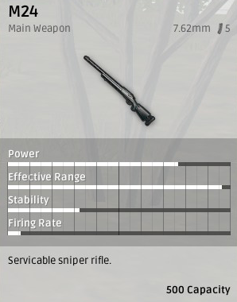
The M24 Sniper Weapon System (SWS) is the military and police version of the Remington Model 700 rifle, M24 being the model name assigned by the United States Army after adoption as their standard sniper rifle in 1988. The M24 is referred to as a "weapon system" because it consists of not only a rifle, but also a detachable telescopic sight and other accessories.
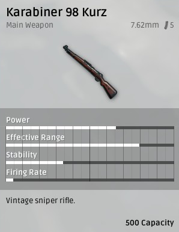
The Karabiner 98 Kurtz is the shortened derivative of the Mauser 98 chambered in 7.92x57 Mauser (The in-game version uses 7.62mm). Designed for the German Wehrmacht during WWII it is considered to be the pinnacle of bolt action design of that era, and its action has been nearly universally copied in every bolt action rifle since its introduction.
This is currently the only bolt-action sniper rifles that drops normally on maps and sometimes on air-drops, while the other sniper rifles only comes on airdrops. Because of this, the KAR98K is usually a very good weapon for long-range engagements without having the risk of going to airdrops for sniper rifles.
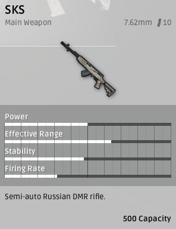
A DMR weapon. Semi-Auto with 10 rounds per mag. Usually 3-2 shot kills.